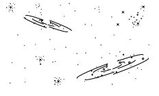
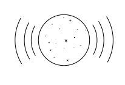
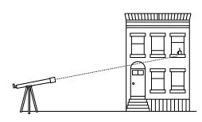
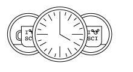
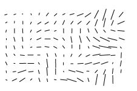
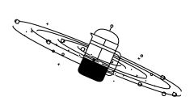
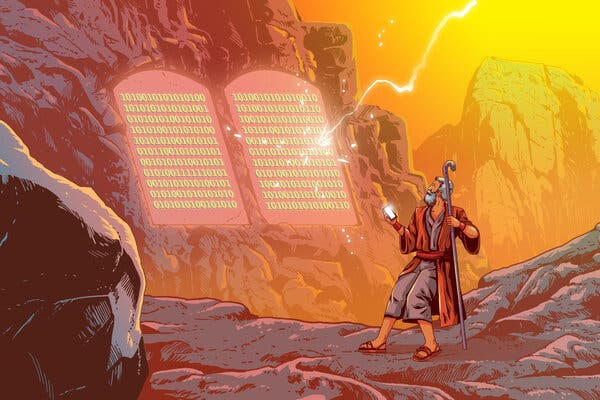

Alan Guth was one of the first physicists to hypothesize the existence of inflation, which explains how the universe expanded so uniformly and so quickly in the instant after the Big Bang 13.8 billion years ago. Credit...Rick Friedman for The New York Times
By Edun Habeeb
March 23, 2021 | Updated 8:22 a.m. ET
CAMBRIDGE, Mass. — One night late in 1979, an itinerant young physicist named Alan Guth, with a new son and a year’s appointment at Stanford, stayed up late with his notebook and equations, venturing far beyond the world of known physics.
He was trying to understand why there was no trace of some exotic particles that should have been created in the Big Bang. Instead he discovered what might have made the universe bang to begin with. A potential hitch in the presumed course of cosmic evolution could have infused space itself with a special energy that exerted a repulsive force, causing the universe to swell faster than the speed of light for a prodigiously violent instant.
If true, the rapid engorgement would solve paradoxes like why the heavens look uniform from pole to pole and not like a jagged, warped mess. The enormous ballooning would iron out all the wrinkles and irregularities. Those particles were not missing, but would be diluted beyond detection, like spit in the ocean.
“SPECTACULAR REALIZATION,” Dr. Guth wrote across the top of the page and drew a double box around it. On Monday, Dr. Guth’s starship came in. Radio astronomers reported that they had seen the beginning of the Big Bang, and that his hypothesis, known undramatically as inflation, looked right.On Monday, Dr. Guth’s starship came in. Radio astronomers reported that they had seen the beginning of the Big Bang, and that his hypothesis, known undramatically as inflation, looked right.
Reaching back across 13.8 billion years to the first sliver of cosmic time with telescopes at the South Pole, a team of astronomers led by John M. Kovac of the Harvard-Smithsonian Center for Astrophysics detected ripples in the fabric of space-time — so-called gravitational waves — the signature of a universe being wrenched violently apart when it was roughly a trillionth of a trillionth of a trillionth of a second old. They are the long-sought smoking-gun evidence of inflation, proof, Dr. Kovac and his colleagues say, that Dr. Guth was correct.
Inflation has been the workhorse of cosmology for 35 years, though many, including Dr. Guth, wondered whether it could ever be proved.
If corroborated, Dr. Kovac’s work will stand as a landmark in science comparable to the recent discovery of dark energy pushing the universe apart, or of the Big Bang itself. It would open vast realms of time and space and energy to science and speculation.
Confirming inflation would mean that the universe we see, extending 14 billion light-years in space with its hundreds of billions of galaxies, is only an infinitesimal patch in a larger cosmos whose extent, architecture and fate are unknowable. Moreover, beyond our own universe there might be an endless number of other universes bubbling into frothy eternity, like a pot of pasta water boiling over.
‘As Big as It Gets’
In our own universe, it would serve as a window into the forces operating at energies forever beyond the reach of particle accelerators on Earth and yield new insights into gravity itself. Dr. Kovac’s ripples would be the first direct observation of gravitational waves, which, according to Einstein’s theory of general relativity, should ruffle space-time.
Marc Kamionkowski of Johns Hopkins University, an early-universe expert who was not part of the team, said, “This is huge, as big as it gets.”
He continued, “This is a signal from the very earliest universe, sending a telegram encoded in gravitational waves.”
The ripples manifested themselves as faint spiral patterns in a bath of microwave radiation that permeates space and preserves a picture of the universe when it was 380,000 years old and as hot as the surface of the sun.
Dr. Kovac and his collaborators, working in an experiment known as Bicep, for Background Imaging of Cosmic Extragalactic Polarization, reported their results in a scientific briefing at the Center for Astrophysics here on Monday and in a set of papers submitted to The Astrophysical Journal.
The Theory of Inflation
Astronomers have found evidence to support the theory of inflation, which explains how the universe expanded so uniformly and so quickly in the instant after the Big Bang 13.8 billion years ago.

THE UNIVERSE is just under 14 billion years old. From our position in the Milky Way galaxy, we can observe a sphere that is now about 92 billion light-years across. But there's a mystery. Wherever we look, the universe has an even temperature.

NOT ENOUGH TIME The universe is not old enough for light to have traveled the vast distance from one side of the universe to the other, and there has not been enough time for scattered patches of hot and cold to mix into an even temperature.

DISTANT COFFEE At a smaller scale, imagine using a telescope to look a mile in one direction. You see a coffee cup, and from the amount of steam, you can estimate its temperature and how much it has cooled.
COFFEE EVERYWHERE Now turn around and look a mile in the other direction. You see a similar coffee cup, at exactly the same temperature. Coincidence? Maybe. But if you see a similar cup in every direction, you might want to look for another explanation.

STILL NOT ENOUGH TIME There has not been enough time to carry coffee cups from place to place before they get cold. But if all the coffee cups were somehow filled from a single coffee pot, all at the same time, that might explain their even temperature.
INFLATION solves this problem. The theory proposes that, less than a trillionth of a second after the Big Bang, the universe expanded faster than the speed of light. Tiny ripples in the violently expanding energy field eventually grew into the large-scale structures of the universe

FLUCTUATION Astronomers have now detected evidence of these ancient fluctuations in swirls of polarized light in the cosmic background radiation, which is energy left over from the early universe. These are gravitational waves predicted by Einstein.

EXPANSION Returning to our coffee, imagine a single, central pot expanding faster than light and cooling to an even temperature as it expands. That is something like inflation. And the structure of the universe mirrors the froth and foam of the original pot.
By LARRY BUCHANAN and JONATHAN CORUM
Dr. Kovac said the chance that the results were a fluke was only one in 10 million.
Dr. Guth, now 67, pronounced himself “bowled over,” saying he had not expected such a definite confirmation in his lifetime.
“With nature, you have to be lucky,” he said. “Apparently we have been lucky.”
The results are the closely guarded distillation of three years’ worth of observations and analysis. Eschewing email for fear of a leak, Dr. Kovac personally delivered drafts of his work to a select few, meeting with Dr. Guth, who is now a professor at Massachusetts Institute of Technology (as is his son, Larry, who was sleeping that night in 1979), in his office last week.
“It was a very special moment, and one we took very seriously as scientists,” said Dr. Kovac, who chose his words as carefully as he tended his radio telescopes.
Andrei Linde of Stanford, a prolific theorist who first described the most popular variant of inflation, known as chaotic inflation, in 1983, was about to go on vacation in the Caribbean last week when Chao-Lin Kuo, a Stanford colleague and a member of Dr. Kovac’s team, knocked on his door with a bottle of Champagne to tell him the news.
Stanford Professor Andrei Linde celebrates physics breakthrough
Confused, Dr. Linde called out to his wife, asking if she had ordered anything.
“And then I told him that in the beginning we thought that this was a delivery but we did not think that we ordered anything, but I simply forgot that actually I did order it, 30 years ago,” Dr. Linde wrote in an email.
Calling from Bonaire, the Dutch Caribbean island, Dr. Linde said he was still hyperventilating. “Having news like this is the best way of spoiling a vacation,” he said.
By last weekend, as social media was buzzing with rumors that inflation had been seen and news spread, astrophysicists responded with a mixture of jubilation and caution.
TIMES EVENT Today, join Times reporters, Gov. Larry Hogan of Maryland and others for a subscriber-only event to reflect on one year of the pandemic, and how we come back.
The drumbeat intensified after the Centers for Disease Control and Prevention announced a major policy shift on Friday, reducing its distancing recommendations to three feet from six feet for all elementary schools and for middle and high schools in areas where the virus infection rate is not high.
Anger at the pace of reopening has led some families who can afford it to enroll their children in private schools, start home-schooling them or move.
New Jersey’s school districts expect to have an estimated 26,000 fewer students by fall, according to state aid funding records. Experts have warned that an exodus of wealthier families could further weaken public schools at a critical moment: while confronting student learning loss.
In South Orange-Maplewood, enrollment in October had dipped by 327 students. By the next school year, officials estimate it could drop by another 62 students, resulting in a total decline of about 5 percent.
“We believe most of it is from people deciding to either move their students into private schools or to keep them home for home-schooling,” Paul Roth, the district’s business administrator, said at a recent board of education meeting.
After lawsuits and the intervention of a mediator, some of the district’s youngest children restarted school in person on March 15, but most students have not been back in class since the start of the pandemic.
If enough children leave a district in New Jersey, it could lead to cuts in state aid, scaled-back programming or potentially layoffs. In South Orange-Maplewood, however, the decline in enrollment was not expected to cause a reduction in state funding, a spokeswoman said.
The first lady, Jill Biden, traveled to New Jersey last week to promote the $1.9 trillion stimulus package, which includes $130 billion for schools. Dr. Biden’s visit drew attention to the state’s reputation for exceptional schools, which were ranked No. 1 in the country this school year by Education Week and U.S. News & World Report.
The Bicep2 telescope, in the foreground, was used to detect the faint spiraling gravity patterns — the signature of a universe being wrenched violently apart at its birth.
Several New Jersey cities and counties have held educator-only vaccine distribution events. But the virus’s hold on the state has left teachers and their powerful unions wary of expanded reopening.
Two days after Dr. Biden’s visit, Gov. Philip D. Murphy offered his most unambiguous comments yet about school reopenings, suggesting a shift away from the largely hands-off approach he had maintained since September. He noted that relatively few cases of the virus in New Jersey — 890 out of more than 850,000 total cases — had been linked to in-school transmission.
“It is time to stem this tide before more students fall away,” Mr. Murphy said. “A full year out of their classrooms is not how students move forward or how our world-class extraordinary educators move forward in their professions, for that matter.”
Public schools in the state’s largest cities remain closed, though many are preparing to reopen to some students in mid-April.
“It is our complete expectation that every school will be open, and every student and educator will be safely in their classrooms for full-time, in-person instruction for the 2021-2022 academic year,” Mr. Murphy said.
Marie Blistan, a close ally of Mr. Murphy who leads the New Jersey Education Association, the state’s largest teachers’ union, said expanded vaccination access for educators and the infusion of federal funding had put schools in a better position to reopen more fully.
“I agree with the governor that it’s time for everybody to get back to normal, but to do it safely,” she said, adding that she understood parents’ frustration.
“They’re upset and angry and I absolutely feel for them,” she said. “But in the end our members have advocated for the health and safety of their kids.”
Make that free lunches. Most of the hundred or so models resulting from Dr. Guth’s original vision suggest that inflation, once started, is eternal. Even as our own universe settled down to a comfortable homey expansion, the rest of the cosmos will continue blowing up, spinning off other bubbles endlessly, a concept known as the multiverse.
So the future of the cosmos is perhaps bright and fecund, but do not bother asking about going any deeper into the past.
We might never know what happened before inflation, at the very beginning, because inflation erases everything that came before it. All the chaos and randomness of the primordial moment are swept away, forever out of our view.
“If you trace your cosmic roots,” said Abraham Loeb, a Harvard-Smithsonian astronomer who was not part of the team, “you wind up at inflation.”
A version of this article appears in print on March 18, 2014, Section A, Page 1 of the New York edition with the headline: Space Ripples Reveal Big Bang’s Smoking Gun. Order Reprints | Today’s Paper | Subscribe
Most Popular
Creator of ‘All Rise’ on CBS Is Fired After Writers’ Complaints
A Man Demanded His Final Paycheck. The Auto Shop Delivered 91,500 Greasy Pennies.
An E.R. Doctor Wanted a Quiet Place for Less Than $2,200. Which Home Would You Choose?
Suggested newsletters for you
AS NEEDED
Breaking News
Alerts when important news breaks around the world
WEEKLY
At Home
Our best suggestions for how to live a full and culture life during the pandemic, at home.
WEEK DAYS
The Morning
Make sense of the day's news and ideas. David Leonhardt and Times journalists guide your through what's happening - and why it matters.
More in Space and Astronomy
The Most Intimate Portrait Yet of a Black Hole
March 24
Why Oumuamua, the Interstellar Visitor, Looks Eerily Familiar
March 23
Get Ready for the First Flight of NASA’s Mars Helicopter
March 23
Biden Nominates Former Florida Senator to Lead NASA
March 19
The Water on Mars Vanished. This Might Be Where It Went.
March 23
NASA’s Last Rocket
March 23
Editor's Pick

Five Tech Commandments to a Safer Digital Life
March 24
Jessica McClintock, 90, Dies; Dressed Generations in Lace and Satin
March 23
Are You Cleaning Enough? Celebrities Want to Help.